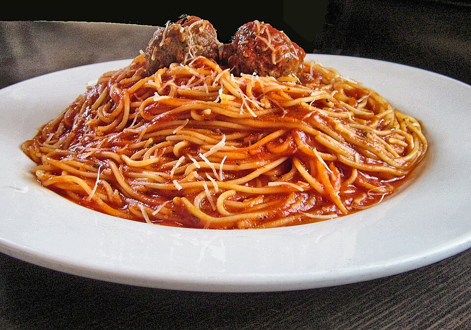

San Marzano Marinara
Imported whole San Marzano plum tomatoes are crushed by hand and simmered with roasted sweet garlic cloves, pure olive oil, and fresh oregano for a balanced, rich red sauce.
A great Italian neighborhood trattoria is measured by the soul of its sauces and the tenderness of its pasta. At Zio, we hand-roll our prime beef and pork meatballs every morning, slow-braise bolognese with red wine and sweet cream, and serve warm, crusty bread with every pasta bowl.

Techniques honed over decades of family culinary passion.
Imported whole San Marzano plum tomatoes are crushed by hand and simmered with roasted sweet garlic cloves, pure olive oil, and fresh oregano for a balanced, rich red sauce.
We blend prime ground beef and pork shoulder with grated pecorino cheese, fresh garlic, chopped Italian parsley, and breadcrumbs, gently braising them in bubbling marinara.
Surrounding our Middleton Drive patio are wooden planters filled with living basil, rosemary, and mint, snipped fresh each evening to garnish pastas, pizzas, and cocktails.